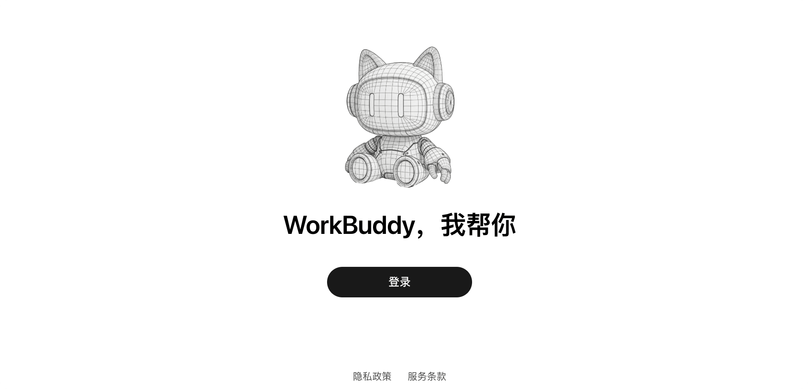
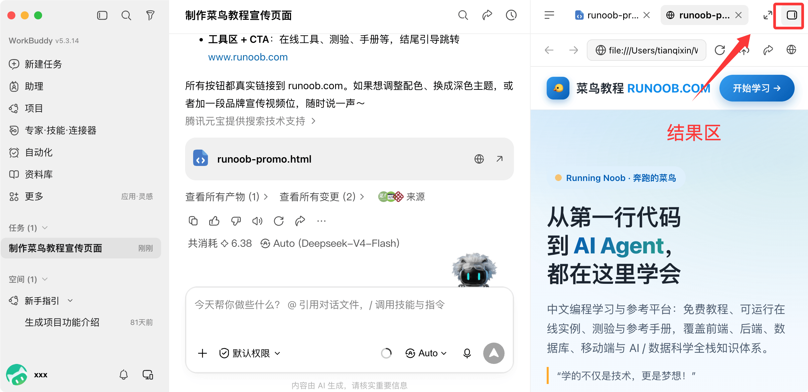
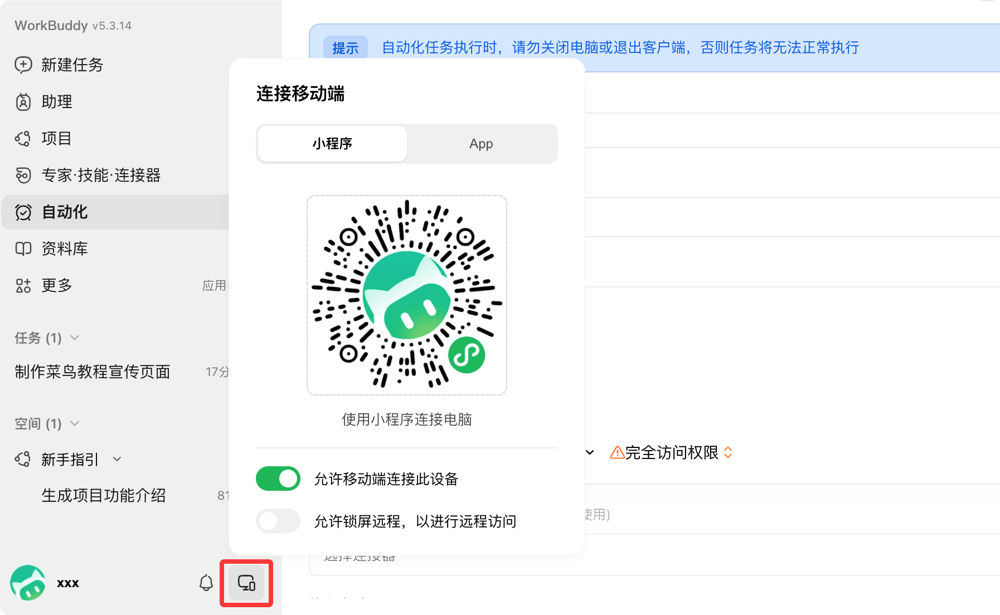
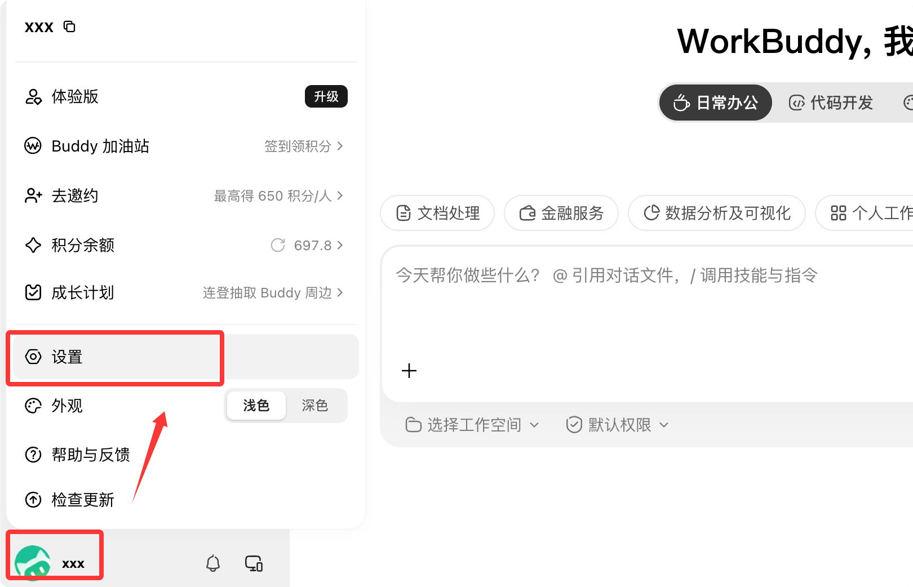

WorkBuddy入門チュートリアル
WorkBuddyは、Tencent Cloudが提供する全シナリオ対応のAIオフィスワークベンチです。一言でタスクを指示すると、自動的に分解・計画・実行し、そのまま受け入れ可能な成果ファイルを納品します。
単にチャットするだけの従来のAIとは異なり、WorkBuddyはあなたのコンピュータ上のファイルを直接操作し、本当にあなたの代わりに作業を実行します。
中核となるワークフロー
WorkBuddyはタスクを処理する際、分解、計画、実行、納品の4つの段階を経ます。その間、あなたが手動でファイルを操作する必要は一切ありません。
一言の要件 到 成果の納品の間、WorkBuddyは、認可されたフォルダを読み取り、中間ファイルを生成し、必要なスクリプトを実行します。このプロセス全体は会話エリアでリアルタイムに確認できます。
従来のAI対話との違い
WorkBuddyを理解する最も直接的な方法は、普段使っているAIチャットツールと比較することです。
| 比較の観点 | 従来のAI対話 | WorkBuddy |
|---|---|---|
| 能力の位置付け | 対話のみで、アドバイスを提供 | 実際にタスクを実行できる |
| ファイル処理 | 手動でファイルを操作する必要がある | ローカルファイルを自動で読み書き |
| タスクの複雑さ | 単一ステップの簡単なQ&A | 複数ステップの複雑なタスク |
| 納品形態 | テキストの返答を出力 | 受け入れ可能な成果を納品（ドキュメント / 表計算 / PPT / Webページ） |
位置付けの違い：従来のAIは「アドバイザー」であり、アドバイスを提供する役割です。WorkBuddyは「同僚」であり、仕事を完了させる役割です。
3つの作業モード
タスク作成時には作業モードを選択する必要があります。WorkBuddyには3つのモードが内蔵されており、それぞれ異なるタスクの性質とポイント消費に対応しています。
| モード | 動作 | 適用シーン | ポイント消費 |
|---|---|---|---|
| Ask（聞いてみる） | 見るだけで変更せず、純粋なQ&A。ファイルの読み書きはしない | 情報調査、方案の相談、ドキュメント分析 | 最小 |
| Plan（考えてみる） | 最初にステップごとの実行計画を示し、あなたが確認してから作業を開始します | 複数ステップの複雑なタスク、重要なレポートや契約書 | 中程度 |
| Craft（やってみる） | 直接実行し、ファイルを読み書きして成果を生成する | 目的が明確な生成・修正タスク | 高め |
初心者向けの注意：WorkBuddyはデフォルトでCraftモードを使用するため、何気なくメッセージを送ると直接実行が始まり、ポイントを消費します。
単にチャットや質問をしたい場合は、先にAskモードに切り替えることを忘れないでください。
モード選択のアドバイス
簡単なQ&AにはAsk、複雑またはリスクの高いタスクはまずPlan計画を確認し、目的が明確な作業はCraft直接実行します。
迷った場合は、デフォルトでCraftを選べばOKです。慣れてくると、モードを正しく選ぶことが効率の問題であり、ポイント消費の問題でもあると分かるでしょう。
インストールとログイン
WorkBuddyのインストールは、コマンドラインも不要で、環境設定も一切必要ありません。数分で完了できます。
システム要件
インストール前に、以下の表を確認して、お使いのコンピュータが要件を満たしているか確認してください。
| 項目 | 要件 |
|---|---|
| オペレーティングシステム | Windows 10以上、またはmacOS 12（Monterey）以上 |
| Macチップ | Mシリーズチップを選択Mac ARM64、Intelチップを選択Mac X64 |
| メモリ | 最低4GB、推奨8GB以上 |
| ネットワーク | AIモデルサービスを利用するためにインターネット接続が必要です |
チップのモデルを確認するには、画面左上のAppleアイコンをクリックし、「このMacについて」を選択すると表示されます。
ダウンロードとインストール
アクセスWorkBuddy公式サイト、「WorkBuddyをダウンロード」をクリックして、対応するシステムのインストーラーを取得します。
Windowsのインストール手順：
インストーラーをダブルクリックし、「本契約に同意する」にチェックを入れ、インストール先を選択し（デフォルトでOK）、「デスクトップにショートカットを作成」にチェックを入れ、「インストール」をクリックして完了を待ちます。
インストール中にセキュリティソフトにブロックされた場合は、サードパーティ製のウイルス対策ソフトを一度無効にしてから再試行してください。自動化モジュールは誤検知されることがあります。
macOSのインストール手順：
ダウンロードした.dmgディスクイメージをダブルクリックし、WorkBuddyアイコンを「アプリケーション」フォルダにドラッグします。
初回起動時に「開発元を検証できません」と表示された場合は、システム設定で開くことを許可する必要があります。
アカウントにログイン
WorkBuddyを起動し、「ログイン」をクリックして、「利用規約」と「プライバシーポリシー」にチェックを入れ、WeChatのQRコードスキャンでログインが完了します。
企業微信（WeCom）、QQ、携帯電話番号、Tencent Cloudアカウントなどでもログインできます。WeChatを推奨します。後でミニプログラムやWeChatアシスタントと連携しやすいからです。

ログイン完了後の画面は以下のとおりです：

フォルダの認可
初回利用時、WorkBuddyはローカルフォルダへのアクセスを要求します。これが、ファイル操作を支援できるための前提です。

セキュリティ原則：最小限の認可。デスクトップ、ドキュメント、ダウンロードなど必要な作業ディレクトリのみを認可し、ディスク全体を認可しないでください。また、パスワードや鍵を含むディレクトリは認可しないでください。
認可されていないディレクトリはWorkBuddyが読み取れません。システムの機密ディレクトリは自動的にブロックされ、高リスクな操作には二次確認が必要です。
初心者特典を受け取る
新規ユーザーは登録後にポイントギフトを受け取れます。左下隅のアバターから「個人センター」に入って確認・受け取りができます。
毎日のチェックインでもポイントを獲得でき、7日間連続でチェックインすると週間ギフトの報酬があります。ポイントはモデルサービスの呼び出しに使用され、Askモードが最も消費が少ないです。
インターフェースの理解
ログイン後、WorkBuddyのメインインターフェースは3つの大きな領域に分かれています。これらを理解すれば、製品全体を理解したことになります。
| 領域 | 機能 | ポイント |
|---|---|---|
| ①サイドバー | タスクリスト、新規タスク、スキル、エキスパート、コネクタ、自動化エントリ | フォルダごとにタスクをグループ化して管理し、下部にアバターと設定があります |
| ②会話エリア | 要件の入力、実行プロセスの確認、継続的な質問 | ファイルのドラッグ＆ドロップアップロード、@でのファイル参照、スクリーンショットの貼り付けに対応 |
| ③結果エリア | 納品ファイルの確認、Webプレビュー、変更履歴 | 成果物はプレビュー、共有、クラウドへのアップロードが可能です |

サイドバーには、Clawリモートコントロール、エキスパートセンター、スキルマーケット、自動化タスクなどの上級エントリも集約されており、後ほど詳しく説明します。
結果エリアは成果を受け入れる場所です。生成されたWord、Excel、PPTはすべて「成果物」で確認でき、Web系の成果物は内蔵ブラウザでリアルタイムにプレビューできます。

クイックスタート：最初のタスクを作成
実際のタスクを一つ完遂することは、10ページの説明書を読むより役に立ちます。以下の5つのステップで、最初の納品を完了させましょう。
ステップ1：タスクを新規作成
メイン画面に戻り、「新規タスク」をクリックしてPC版のタスクを作成します。
モバイル端末から送信したタスクは「アシスタント」で確認できます。

ステップ2：ワークスペースを選択
入力欄の左下にある「ワークスペースを選択」をクリックし、タスクで使用する作業ディレクトリを指定します。
作業コンテキストを長期的に蓄積するには、専用フォルダを固定して使い続けることをおすすめします。そうすれば成果物が見つけやすく、AIもあなたの背景をどんどん理解するようになります。

ステップ3：タスクを説明
入力欄で一文であなたの要求を説明します。「目標 + 入力 + 出力形式 + 制約」の4つの要素を一度に明確に伝えることをおすすめします。
制作一个 WWW.RUNOOB.COM 网站的宣传页面，HTML格式即可
説明が具体的であればあるほど、成果物の品質が高くなり、手戻りが少なくなります。
ステップ4：実行を開始
「送信」をクリックすると、WorkBuddyがタスクを自律的に分解し、手順を計画して実行します。
左側の会話エリアに実行プロセスと段階の説明がリアルタイムで表示されます。下の実行ログのような形で、いつでも進捗を確認できます。

ステップ5：結果を確認
右側のウィンドウを開いてタスク結果を確認します。生成された納品ファイルは「成果物」、中間ファイルは「ワークスペースファイル」で確認できます。
不満があればそのまま追加で指示してください。既存のコンテキストに基づいて修正されるため、最初からやり直す必要はありません。
核心の心得：「あなたが要件を伝え、AIが成果を納品する」――途中でずっと見ている必要はありません。完了したら検収すればいいのです。
要件記述のコツ
AIに要件を伝えるのは人とのコミュニケーションと同じです。明確に伝えれば伝えるほど、相手は正確に実行してくれます。
合格レベルの要件記述には、通常以下の4つの要素が含まれます。
| 要素 | 意味 | 例 |
|---|---|---|
| 目標 | 何を生成するか / どのファイルを処理するか | 営業振り返りレポートを1部生成する |
| 入力 | 分析対象のデータや参考ドキュメントの場所 | デスクトップの「销售数据.xlsx」を読み込む |
| 出力形式 | Word / Excel / PPT / Webページ、分量、スタイル | Word文書で出力、ビジネススタイル |
| 制約 | 範囲、分量、締め切りなどの制限 | 2000字程度、今日18時までに完了 |
曖昧と明確の比較
曖昧な要件は曖昧な結果を生み、明確な要件だけが正確な成果物をもたらします。これは最も覚えておく価値のある教訓です。
| タイプ | 言い回し | 結果 |
|---|---|---|
| 曖昧 | まとめを書いて | 何を書くか、誰宛てか、どの形式か不明 |
| 明確 | 添付の会議議事録3部に基づき、約2000字の会議サマリーを「決定事項 / ToDo / リスク」の3部構成でまとめ、Wordで出力 | 一発で完成し、ほぼ修正不要 |
AIに要件を伝える際は、ファイルパスを書くだけではなく、ファイルを入力欄にドラッグ＆ドロップでアップロードすることを優先してください。認識エラーを防げます。
よく使う例
以下の6つの頻出オフィスシーンでは、指示をそのままコピーして使えます。
フォルダのスマート整理
散らかったファイルを種類ごとに分類して整理し、同名ファイルには自動的にプレフィックスを付けて上書きを防ぎます。
把桌面「待归档」中的文件按类型分入 文档 / 图片 / 表格 三个文件夹，重名文件自动加前缀避免覆盖
実行が完了すると変更リストが表示されます。移動とリネームのすべての操作が追跡可能です。
週報をワンクリックで生成
業務記録データに基づき、自動で集計し、プロジェクト単位で構造化された週報を生成します。
读取桌面「工作周记.xlsx」的任务记录，重点标注 runoob 项目的进展，按项目汇总本周完成情况，生成周报（本周总结 / 问题与风险 / 下周计划），输出 Word 文档
データの読み込みからレイアウト・完成まで、通常1〜2分です。従来の手書きでは30分以上かかります。
Excelのクリーニングと可視化
乱雑な売上データをクレンジング：重複排除、形式統一、集計、異常値のフラグ付けを行い、グラフを生成します。
读取「RUNOOB销售数据.xlsx」，按订单号列去重，按月份汇总各区域销售额，生成柱状图，输出新的 Excel 文件
数万行のデータ処理が通常1分以内で完了し、大量の手作業を省けます。
PPTをワンクリックで生成
要件の説明から直接プレゼンテーション資料を生成し、ビジネススタイルに自動レイアウトします。
根据这份销售数据生成 8 页月度汇报 PPT，商务风格，逻辑清晰，标题醒目
数分で初稿が完成します。その後も「3ページ目を1ページ2図に変更」「フォントを少し大きく」など、細部を追加指示できます。
請求書情報の抽出
請求書のスクリーンショットを一括読み込みし、主要フィールドを抽出して、経費精算可能なExcelテーブルに整理します。
读取文件夹中的 30 张发票截图，提取日期、金额、税号，整理成 Excel，信息不确定的标黄
一括抽出は数十秒で完了します。確認できない情報は自動的にマークされるため、人手による再確認が簡単です。
定期自動化タスク
自然言語でスケジュールタスクを設定すると、指定した時刻に自動実行され、成果物をスマートフォンにプッシュできます。
每天早上 9 点读取今日计划，生成优先级清单，推送到我的微信
毎日 / 毎週 / 毎月 / 一回限りなど、複数の周期に対応しています。設定後はパソコンに張り付いている必要はありません。
応用機能
基本的なタスクを一通り実行できるようになったら、以下の4つの機能で効率をさらに一段階引き上げられます。左側のサイドバーのエキスパートメニューをクリックして確認：

スキル Skills
スキルとは、使用頻度の高い長文の指示や定型フローをパッケージ化した「操作マニュアル」で、週報生成、データクレンジング、フォーマット変換などの反復作業に適しています。
入力欄に入力すると、/インストール済みのスキルをすばやく呼び出せます。また、「週報を作るスキルを探して」と直接伝えると、スキルマーケットを自動で検索してインストールします。
スキルは自作にも対応しています。安定したワークフローを保存しておけば、次回はワンクリックで再利用できます。
エキスパート Experts
エキスパートは、専門分野のプロセスをパッケージ化したAIエージェントで、技術開発、プロダクトデザイン、データ分析などの領域をカバーしています。
タスクに「分野のペルソナ」を設定すると、用語がより正確になり、成果物が業界の慣行により沿ったものになります。まるで専門のコンサルタントを招いたようなものです。
複雑なタスクでは「エキスパートチーム」を編成することもでき、複数の役割が分担して協力し、並行実行して結果をまとめて納品します。
コネクタ Connectors
コネクタは外部サービスをWorkBuddyに接続します。基盤となるプロトコルはMCP（Model Context Protocol）です。
現在、腾讯文档、QQメール、GitHub、Notion、高德地图など、30以上のコネクタに対応しています。
認可後は、「さっきのレポートを腾讯文档に保存して」「沪深300の直近1ヶ月の推移を取得してグラフを描いて」と直接伝えるだけで、データ、グラフ、結論が一度に揃います。
定期自動化とモバイル端末
新規タスク作成時にスケジュールモードを選択すると、一文で自動化を設定できます。例えば、毎朝、業界ニュースのダイジェストを取得する、などです。


WorkBuddyは、微信（WeChat）ミニアプリ/App、WeChatアシスタント、企業微信（WeCom）アシスタント、QQボット、飞书（Feishu/Lark）、钉钉（DingTalk）ボットなど、モバイル端末からの利用に対応しています。
Clawリモートコントロールを設定すると、スマホのWeChatからパソコンを遠隔操作してタスクを実行できます。電車の中でメッセージを送っておけば、会社に着く頃には成果物がデスクトップに置いてあります。

注意：スケジュールタスクを実行するには、WorkBuddyクライアントを起動したままにする必要があります。遠隔操作時は、パソコン側も電源が入っていてネットワークに接続されている必要があり、アクセスできるのは認可済みのフォルダのみです。
モデル切り替え
WorkBuddyには複数の大規模モデルが内蔵されており、タスクの種類に応じて柔軟に切り替えられます。
| モデル | 特徴 | 推奨シーン |
|---|---|---|
| 混元 | テンセント自社開発、総合性能のバランスが良い | 日常業務 |
| DeepSeek | 論理的推論とコード能力が強い | コード開発、論理分析 |
| Kimi | 長文テキスト処理能力に優れる | 長文ドキュメントの理解・要約 |
| GLM / MiniMax | 汎用能力があり、消費が少ない | 簡単なタスク、ポイント節約 |
迷ったときはAuto自動モードを選択すれば、システムがタスクの種類に応じてモデルを推奨します。
モデルによってポイントの消費量が異なります。簡単なタスクは軽量モデルに切り替えると、消費量は深度推論モデルの3分の1です。
カスタムモデルは、設定メニューからモデルを選択して設定できます：

モデル選択メニューで、ドロップダウンメニューからカスタムモデルを設定します：

よくある質問
WorkBuddyはネットワークへの接続が必要ですか？
必要です。AIモデルサービスはネットワーク経由で呼び出されるため、安定したネットワーク接続を保ってください。
ただし、ファイル処理はデフォルトでローカルで完了し、元データはクラウドにアップロードされません。サーバー側はデータの断片のみを処理し、使用後すぐに破棄されます。
パソコン上のすべてのファイルにアクセスできますか？
できません。WorkBuddyは、あなたが明示的にチェックして認可したフォルダのみにアクセスできます。システムの機密ディレクトリは自動的にブロックされ、リスクの高い操作には再確認が必要です。
タスクの実行途中で停止できますか？
できます。実行中のタスクはいつでも「停止」できます。中断後は、補足説明を加えたり、要件を調整して再送信したり、既存の内容に基づいて続行したりできます。
ファイルのアップロードに失敗した場合はどうすればよいですか？
まず、ファイル形式がサポートされているか確認してください。大きなファイルは圧縮または分割してからアップロードできます。失敗が続く場合は、ネットワーク接続を確認することをおすすめします。
生成した成果物を他の人と共有するにはどうすればよいですか？
会話エリア上部の「タスクを共有」で公開リンクを生成できます。結果エリアの成果物ファイルにも共有ボタンがあります。
また、クラウドにアップロードして、腾讯文档やクラウドストレージなどで複数の端末に同期して確認することもできます。
ポイントが足りない場合はどうすればよいですか？
資料を調べるだけならAskモードが最もポイントを節約できます。簡単なタスクは軽量モデルに切り替えましょう。毎日のチェックインを続け、新規ユーザーは登録特典を忘れずに受け取りましょう。
その他の拡張機能最後に：WorkBuddyを使いこなす鍵は、機能を丸暗記することではありません。「目標 + 入力 + 出力形式 + 制約」の4つの要素を一度に明確に伝えることです。
小さなタスクから始めて、「要件を伝え、成果を確認する」というサイクルを最初に一通り経験すれば、残りの機能も自然につながっていきます。
クリックしてノートを共有
<p style="font-size:14px;">ノートは本記事の内容の拡張である必要があります！</p><br> <p style="font-size:12px;"><a href="../tougao.html" target="_blank">記事の投稿はこちらをクリック</a></p> <p style="font-size:14px;"><a href="../w3cnote/runoob-user-test-intro.html" target="_blank">登録招待コードの取得方法</a></p> <h3 class="text-muted"><i class="fa fa-info-circle" aria-hidden="true"></i> ノートを共有する前に<a href=";.html" class="runoob-pop">ログイン</a>が必要です！</h3> <p><a href="../w3cnote/runoob-user-test-intro.html" target="_blank">登録招待コードの取得方法</a></p>